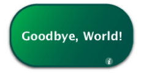

Widget Backs and Preferences
Widgets have the ability to display, record, and retrieve preferences. This allows users to customize your widget based on options you provide. Preferences should be displayed on the back of your widget. The section “Displaying a Back Side” discusses how to set up your widget for sides and how to provide the appropriate buttons and animations. “Providing Preferences” discusses saving and retrieving preferences.
Note: Most of the code in this chapter can be found in the Goodbye World sample project.
Contents:
Providing Preferences
Displaying a Back Side
Providing Preferences
In Dashboard you can have preferences that persist through restarts and logins. You use the following two methods:
widget.setPreferenceForKey(preference, key)widget.preferenceForKey(key)
The first of these allows you to set a preference for an arbitrary key that you provide:
if(window.widget) |
{ |
widget.setPreferenceForKey("Goodbye, World!","worldString"); |
} |
Passing in null clears its current value. Do this when your widget’s preferences should not persist after it is closed.
The second method, widget.preferenceForKey(key), retrieves the preference for the provided key, or returns undefined if no entry exists for the key:
if(window.widget) |
{ |
var worldString = widget.preferenceForKey("worldString"); |
if (worldString && worldString.length > 0) |
{ |
worldText.innerText = worldString; |
} |
} |
Here, a preference is retrieved and placed in the widget. Include this code in a function that is called when your widget is opened.
Note: Even if you don’t want your widget to remember its preferences after it is closed, you need to consider that the user may log out or restart while your widget is open. When the user logs back in, Dashboard automatically opens your widget and the user may expect that your widget be exactly as they left it. Use preferences to save your state for cases such as this and clear them when your widget is consciously closed.
Strings saved and retrieved through this mechanism are stored as clear text and therefore are not secure and not recommended for saving passwords or other sensitive information.
Displaying a Back Side
You may find it prudent to provide an interface for setting preferences or displaying information about your widget. When introducing a back to your widget, you need to design your widget with the back in mind, include an Apple Info Button, and provide for the transition to the preferences and the return to the widget’s main interface.
In Your HTML File
First, in the HTML body of your widget, you need to have two <div> layers in place: one for the front part of your widget and one for the back (which should be hidden via CSS). You also need to include a <div> for the AppleInfoButton, placed on the widget's front, and a <div> for a Done button, placed on the widget's back. The code sample below provides a skeleton including all of these elements:
<body onload='setup();'> |
<div id="front"> |
<!-- Your widget’s front side here --> |
<div id='infoButton'></div> |
</div> |
<div id="back"> |
<!-- Your widget’s back side here --> |
<div id="doneButton"></div> |
</div> |
</body> |
Of note is the onload handler, setup(). In the section “In Your JavaScript File,” setup() creates objects that provide an AppleInfoButton, used to flip your widget to its back, and an AppleGlassButton, used when the user is done setting preferences. In order for the setup() function to work correctly (meaning that the info and glass buttons are properly constructed), you need to include these classes in your widget's HTML:
<script type='text/javascript' src='/System/Library/WidgetResources/AppleClasses/AppleInfoButton.js' charset='utf-8'/> |
<script type='text/javascript' src='/System/Library/WidgetResources/AppleClasses/AppleAnimator.js' charset='utf-8'/> |
<script type='text/javascript' src='/System/Library/WidgetResources/AppleClasses/AppleButton.js' charset='utf-8'/> |
The required Apple Classes are present on Mac OS X 10.4.3 and newer. If you are targeting your widget for earlier versions of Mac OS X 10.4, read “Introduction to the Apple Classes” to learn how to include these classes with backward compatibility in mind.
In Your JavaScript File
The JavaScript portion of your widget needs to include code that flips your widget between its sides and constructs the Info and Done glass buttons.
Constructing the Apple Info and Glass Buttons
The setup() function, declared as the widget's onload handler in its HTML file, is called when the widget's HTML, CSS, and JavaScript files are loaded. In this function, the constructors for the info and Done button are called:
var gDoneButton; |
var gInfoButton; |
function setup() |
{ |
gDoneButton = new AppleGlassButton(document.getElementById("doneButton"), "Done", hidePrefs); |
gInfoButton = new AppleInfoButton(document.getElementById("infoButton"), document.getElementById("front"), "white", "white", showPrefs); |
} |
Notice that, in addition to the setup() function, two global variables are declared. These variables correspond to the two buttons being created. Usually, you want to keep the buttons stored as global objects so that you can interact with them later.
Next, the setup() function calls the constructors for an AppleInfoButton and an AppleGlassButton. Recall that your HTML file included the necessary classes to instantiate these buttons; setup() is called after the classes are loaded, and the new call creates new instances of each class. The functions that follow the new call, AppleGlassButton()and AppleInfoButton() are constructors that take in parameters, like the DOM element where the button should be placed or the event handler for a click on that button. The last parameter in both constructors are the handlers that flip the widget over; the handlers are defined in the next section, “Flipping Sides.” The constructor returns a reference to an object that represents the button. The resulting objects are assigned into the global variables specified earlier. Now that the buttons are created, you can use the previously declared global variables to interact with them at any time. for instance, you could change the color of the AppleInfoButton at any point by calling:
gInfoButton.setStyle("black","black"); |
For more on the methods available for AppleGlassButton, read “The Apple Glass Button Subclass.”
Flipping Sides
The following function switches your widget to its back. It is designated as the Apple Info Button's event handler in the button's constructor in the prior section, “Constructing the Apple Info and Glass Buttons”:
function showPrefs() |
{ |
var front = document.getElementById("front"); |
var back = document.getElementById("back"); |
if (window.widget) |
widget.prepareForTransition("ToBack"); |
front.style.display="none"; |
back.style.display="block"; |
if (window.widget) |
setTimeout ('widget.performTransition();', 0); |
} |
Clicking the Info button (defined as <div id='infoButton'> in your HTML and constructed in your JavaScript) calls this function, which causes the back to be displayed. In the function, the front and back layers are obtained and assigned to local variables. Next, widget.prepareForTransition("ToBack") freezes the current interface, meaning that any changes to your widget’s user interface after this point are not shown. The front is then hidden and the back is made active. Finally, the transition is run that flips your widget, with the frozen user interface on the front of the transition and the currently active user interface on the back.
(As an aside, you may have noticed that setTimeout() is used to call performTransition(). By setting the timeout to 0, the transition is performed on the next event loop, allowing for the sides to be swapped before the transition is run. This is an optimization that ensures that both sides of the flip look correct.)
Hiding the preferences and returning to your main user interface follows a similar procedure; note that this function was assigned to the Done button in its constructor in the previous section, “Constructing the Apple Info and Glass Buttons”:
function hidePrefs() |
{ |
var front = document.getElementById("front"); |
var back = document.getElementById("back"); |
if (window.widget) |
widget.prepareForTransition("ToFront"); |
back.style.display="none"; |
front.style.display="block"; |
if (window.widget) |
setTimeout ('widget.performTransition();', 0); |
} |
This time, however, the back layer is hidden and the front layer is shown. The method widget.prepareForTransition("ToFront") freezes the current user interface and ensures that the flip transition occurs in the opposite direction as when the preferences were shown.
In Your CSS File
Now that you have the front and back parts defined for the widget, as well as the Info button’s parts, you need to use CSS to position them, set their visibility, and set other parameters:
#infoButton { |
position:absolute; |
bottom:12px; |
right:40px; |
} |
#front { |
display:block; |
} |
#back { |
display:none; |
} |
#doneButton { |
position:absolute; |
bottom:20px; |
left:82px; |
} |
The first style relates to the Info button. It places the button at the bottom right corner of the widget.
Also of note here are the front and back styles, since they set the visibility of the widget sides. When a widget is first opened, its front side is the viewable side, so the back needs to be hidden. The styles set the front <div> to be visible and hides the back <div>. The viewable <div> is changed using the JavaScript code in the next section.
Finally, a style placing the Done button is included.
© 2009 Apple Inc. All Rights Reserved. (Last updated: 2009-02-04)